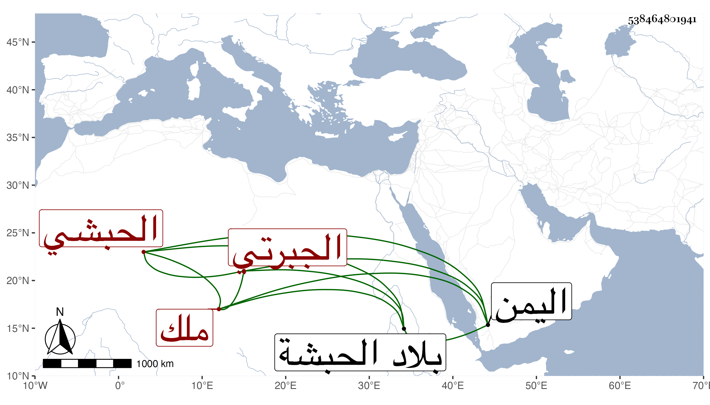

0902Sakhawi.DawLamic.ITO20230111-ara1.EIS1600.538464801941
Biography ID: 538464801941
29
محمد بن أحمد بن علي بن عمر أو محمد سعد الدين أبو البركات بن حرب أرغد بن صير الدين بن ولسع الجبرتي الحبشي ويعرف كسلفه بابن سعد الدين والد صير الدين محمد الآتي ملك المسلمين من الحبشة كان أخوه حق الدين محمد المذكور في الدرر قد حبسه مدة فاتفق أنه ملك بعده سنة ست وسبعين وسلك مسلكه في محاربة الحطى وتمكن في الملك بتؤدة وسياسة واتسعت مملكته وكثرت جيوشه ، ودام في الملك حتى استشهد في سنة خمس عشرة فمدة مملكته نحو أربعين سنة . هكذا استفدته من بعض تعاليق شيخنا ولم يذكره في إنبائه نعم هو مذكور في سنة أربع وثمانمائة من حوادثه ، وكان خيرا دينا ، وبعد ثمانية أشهر من وفاته انتظم شمل مملكته بأحد أولاده صير الدين فان الناصر أحمد ابن الأشرف صاحب اليمن جهزه ومعه اخوته التسعة إليها .
